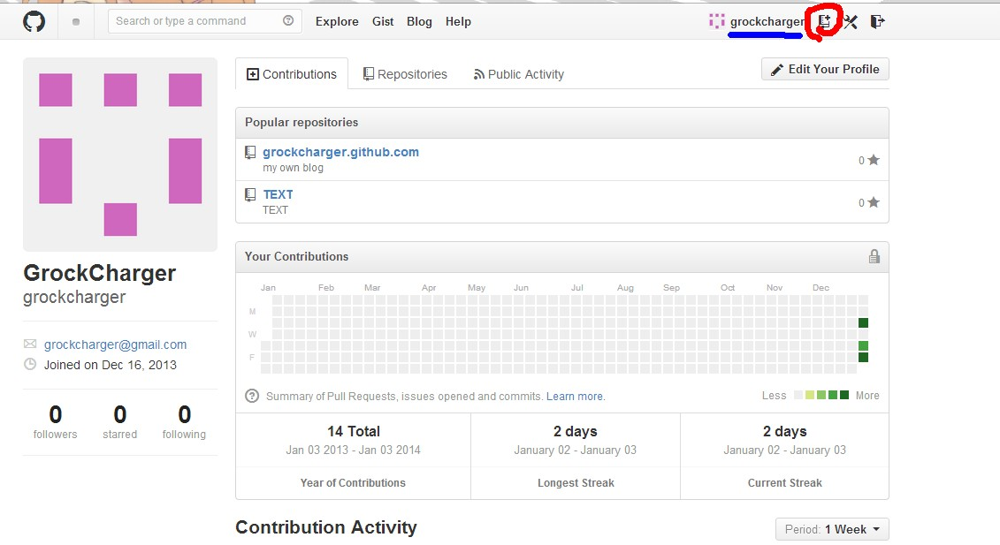
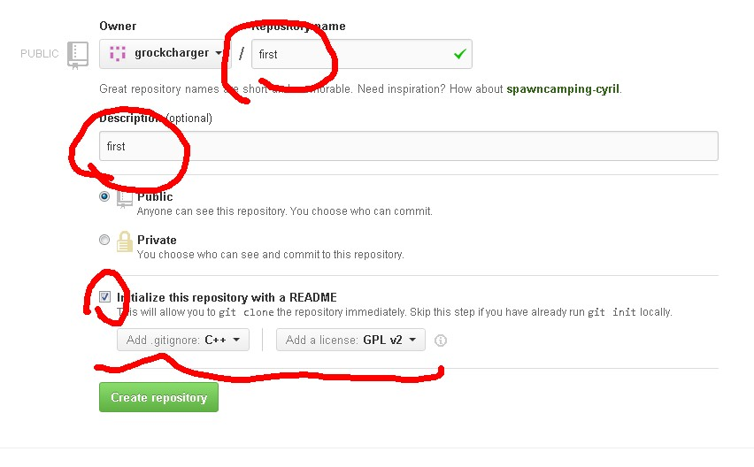
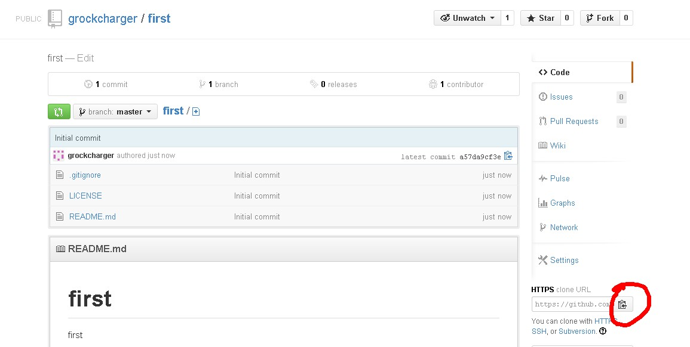

2014-1-7日记
妈蛋明天考电路啊，哈哈哈哈，还一点不会，晚上刷夜吧
more ...git简易教程
今天研究了一下git怎么使用，我的操作系统是ubuntu 12.04
一、在git-hub线上的操作
首先要注册，具体不介绍了，链接地址:git-hub.com
注册完毕界面是这样的蓝色标注的是你的用户名：

点击红圈标记的按钮，进入这个界面：

按照图片，红圈标记的是需要填写和修改的
修改过后点击create repository 进入这个界面：

这样仓库就建立好了，点击红圈标注的按钮可以复制仓库地址
二、在本地操作建立git仓库
用户可以通过在线上操作添加文件代码等，但这样很不方便，这种方式修改的效率太低，一般采用的方式均是通过git工具，将代码下载到本地，在本地修改后，然后再上传到github托管的代码库中，方法如下：
首先安装gti的工具，命令如下：
sudo apt-get install git
之后创建本地git仓库，命令如下
mkdir tmp
cd tmp
git init
touch test.md
git ...我的第一篇博文
我知道这只是一个很简单的博客，不过我还是想写点东西。。。。
ㄊㄟㄖㄧㄈㄘㄛㄎㄇㄟㄈㄘㄍㄋㄘㄛㄋㄘㄍㄙㄩㄍ ㄣㄟㄛㄆㄊㄍㄐㄔㄗㄨㄛㄋㄛㄨㄋㄨㄇㄙㄛㄋㄎㄛ ㄊㄟㄖㄧㄈㄘㄛㄎㄇㄟㄋㄘㄛㄇㄟㄊㄖㄎㄎㄇㄛㄖ ㄈㄘㄍㄗㄇㄙㄕㄎㄍㄑㄕㄘㄎㄜㄙㄍㄎㄨㄍㄨㄊㄠ
more ...